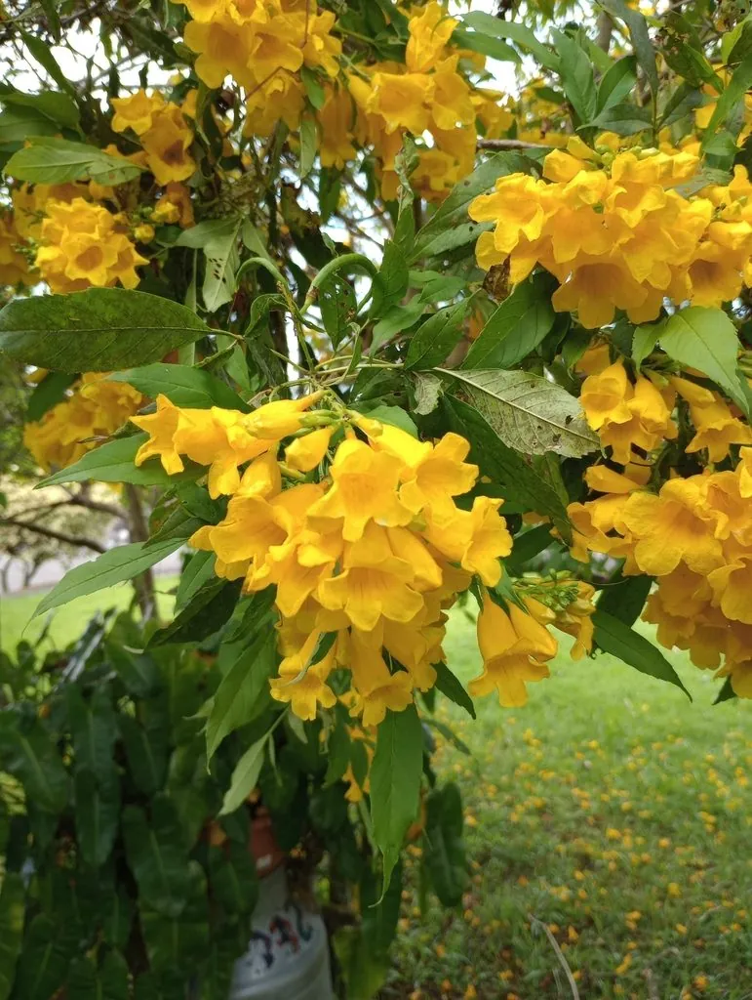

灌木与花木 · 植物界
黄钟花 Tecoma stans

紫葳科黄钟花属常绿灌木或小乔木，花冠金黄色、钟状，花序繁密，是热带与亚热带地区常见的黄花观赏树种。
- 分类
- 门被子植物门纲木兰纲目唇形目科紫葳科属黄钟花属
- 栖息环境
- 热带美洲的灌丛与疏林，喜温暖、阳光充足，耐旱耐瘠薄
- 地理分布
- 原产墨西哥至南美；中国华南、西南及世界热带地区栽培
- 保护级别
- IUCN 暂无评估；栽培广泛，部分地区归化
物种志
黄钟花为常绿灌木或小乔木，高 3–6 米，树皮灰褐色，小枝绿色。叶对生，奇数羽状复叶，小叶 3–7 枚，卵状披针形，边缘具锯齿。圆锥花序顶生，花冠漏斗状钟形，金黄色，长 4–5 厘米，花冠檐部 5 裂，裂片边缘略波状；蒴果细长，成熟时褐色，种子具翅。
本种原产墨西哥至南美洲的热带地区，喜温暖、阳光充足的环境，耐旱、耐瘠薄，在中国华南、西南常作行道树与庭园观花树。它花期长、花量极大，盛开时满树金黄，是热带城市中最醒目的黄色花木之一。黄钟花不耐寒，北方只能盆栽；其花蜜丰富，能吸引蜂类与蜂鸟。木材轻软，可供农具与薪材。在华南，它常与红花品种搭配种植，形成黄红对比。
形态与习性
- 株高3–6 米，小枝绿色
- 花期5–10 月，花金黄色
- 果期秋季，蒴果细长
- 光照强阳性，需充足直射光
- 水分耐旱，忌长期积水
- 土壤不择土壤，以排水良好的壤土为佳
- 主要用途行道树、庭园观花与蜜源植物
趣味知识
- 黄钟花的花冠像一口金色的小钟，盛开时满树金黄，非常壮观。
- 它原产热带美洲，在夏威夷、澳大利亚等地已成为归化植物。
- 黄钟花的花蜜丰富，是蜂类与蜂鸟的重要食源。
- 它的木材轻软，当地居民常用来制作农具与薪柴。